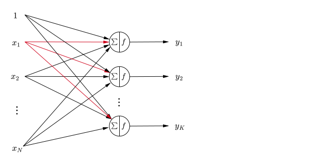
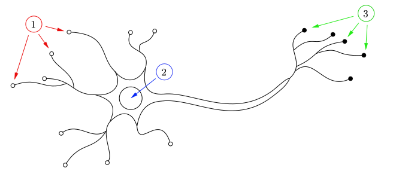

Sometimes, bias is handled as an additional input $1$ with weight $w_0$
Neural Networks
Artifical Neuron
Mathematical Model
Equivalently
where:
$ \mathbf{x} =\begin{bmatrix} x_1 \\ x_2 \\ \vdots \\ x_N \end{bmatrix} $ - input signals vector
$ \mathbf{w} = \begin{bmatrix} w_1 \\ w_2 \\ \vdots \\ w_N \end{bmatrix} $ - weights vector
$b$ - bias
$\sum$ - linear aggregator
$$ \sum = \sum_{i=1}^N x_i w_i + b = \mathbf{w}^\intercal \cdot \mathbf{x} + b $$$f$ - activation function
$$ f(\mathbf{w}^\intercal \cdot \mathbf{x} + b) $$$y$ - output of model
$$ y = f(\mathbf{w}^\intercal \cdot \mathbf{x} + b) $$Model Modifications
We can also express the value of output as
$$ y(\mathbf{x}; \Theta) = f(\mathbf{w}^\intercal \cdot \mathbf{x} + w_0) $$where $\Theta = \{\mathbf{w}, w_0\}$ denotes parameter set, with $b \text{ := } w_0$
The perceptron model can be extended to include multiple outputs $\{y_k\}_{k=1}^K$
Now the $k$-th output can be expressed
$$ y_k (\mathbf{x}; \Theta) = f \bigg(\sum_{i=1}^{N} x_i w_{ki} + w_{k0} \bigg) = f(\mathbf{w}_k^\intercal \mathbf{x} + w_{k0}) $$

Bibliography
- Neural Networks and Learning Machines, Third Edition
- Neural Networks and Deep Learning A Textbook, Second Edition
- Grokking Deep Learning
- Geometry of Deep Learning, A Signal Processing Perspective
- Dive into Deep Learning
- Deep Learning for NLP and Speech Recognition
- Deep Learning for Medical Image Analysis
- Deep Learning, A Visual Approach
- Artificial Neural Networks, A Practical Course